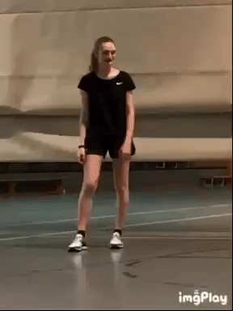

Name: Soraya Ferdani
Alter: 20 Jahre
Hobbies: Zocken, Lesen, Backen, Netflix
Studiengang: OMB
Ich studiere (wie hoffentlich auch alle anderen hier) an der HFU. Mein Studiengang ist OMB und ich bin im zweiten Semester.
Ursprünglich wollte ich eigentlich Tiermedizin studieren und wurde dann auch kurzfristig angenommen, konnte aber nicht innerhalb von ein paar tagen einfach mal so nach München ziehen :)
Also dachte ich mir wird es eben OMB, weil Medien und so ist ja auch ganz interessant. Und ich muss sagen bis jetzt macht das Studium echt Spaß.
Hier ein sehr lehrreiches Video
Und noch ein sehr unterhaltsames Video
Hier eine Veranschaulichung meines generellen Geisteszustands
